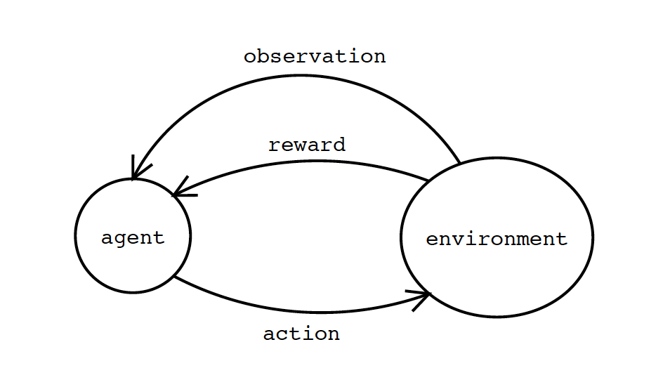

When asked what Intelligence is, everyone comes up with their own definition and every suggested idea or test applies only to a certain set of people, animals, machines or group in definite environment. This uncertainty in the factors, makes it difficult to conclude the concept of universal intelligence measurement. A standard test, which covers all aspect of intelligence and can be equally applied to all groups and skills, without being biased towards any particular section. So, in order to formulate a general idea of intelligence Shane Legg and Marcus Hutter analyzed various informal definitions of intelligence and derived formulas to define machine intelligence for machines.
“Innumerable tests are available for measuring intelligence, yet no one is quite certain of what intelligence is, or even just what it is that the available tests are measuring.”
These lines accurately depict the core idea of the paper. The main issue with formulating single standard method to test intelligence is - how many parameters can it test? And therefore, designing one system for validating intelligence in all species including machines does not seem fair. Moreover, machines can have sensors, linguistic abilities, working environments unlike other species, which might give it an edge over others. Therefore, developing different kind of test for different entities is the ideal solution. The paper presents the different ideas of test: like Human intelligence test where humans are tested through an IQ test. Later Wechsler and the Stanford-Binet test was devised, which tested basic arithmetic, comprehension, vocabulary, spatial-perception and problem solving. But these tests cannot be applied to a machine as with the advancing technology the performance will keep changing.
I found the idea of Gardner’s “multiple intelligences” very appealing which is similar to ‘g-factor’ or general intelligence of Spearman. As human brain comprises of various metal abilities which results due to the intelligence of different parts. The g-factor is simply the correlation between these different dimensions. And after going through different definitions, the intelligence is concluded as the ability of an agent to interact with external environment. Intelligence measures an agent’s ability to achieve goals in a wide range of environments.
This general definition is later formulated to be used with respect to a machine. It basically comprises of three components – an agent, environment and a goal. The signals sent from agent to environment are actions and signals sent from the environment to the agent as perceptions and agent communicate with the environment to achieve a goal. Now to measure agent’s performance we have a signal as reward and agent goal is to get maximum reward. This set up is known as Basic agent environment framework which is similar to reinforcement learning.
The famous test to measure machine intelligence proposed by Alan Turing was severely criticized. As a better approach many other test surfaced like with different characteristic- compression test, linguistic complexity, multiple cognitive ability, psychometric tests and C-test.
The conclusion is intelligence is not simply the ability to perform well, but the intelligent agent should be able to adapt and learn as per the environment. Finally, the properties which defines universal intelligence test were formulated and the properties were that test should be valid, meaningful, informative, wide range, general, unbiased, fundamental, formal, objective and universal. And the agent’s universal intelligence is the total of its performance in all environments. Only challenge is to incorporate these theoretical ideas into a workable test.